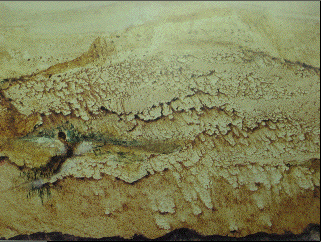

| In the 1830s Georges Sand used the technique later named decalcomania
to paint landscapes (the branching of decalcomania standing well for the branches
of trees) and more abstract compositions. Click the picture for an enlargement
in a new window. |
|
 |
| Around 1935 rediscovered and named decalcomania. |
| Dominguez and Boris Margo used paper; Hans Bellmer, Max Ernst, Marcel Jean, Enrico Donati,
and Andre Masson used canvas; Max Bucaille used glass. |
| Dominguez's decalcomanias are Decalcomainas (1936-7),
The Lim-Bicycle (1936), The Smoker (1937), and Mars (1956).
Bellmer's decalcomanias included The Two Friends. |
| Perhaps the best-known examples are those of Max Ernst. Ernst used
decalcomania to obtain richly-textured images evoking a dream-like quality. |
| Exampes include Mythological
figure - woman (1940), Three well-tempered cypresses (1949),
Europe After the Rain (1940-42), and
Blue mountain and yellow sky (1959). |
| Here is a portion of that picture (click to enlarge) and a detail
showing more clearly the decalcomania pattern (click to enlarge). |
|
| Dominguez's method has an interesting precedent: Alexander
Cozzens' method of drawing landscapes, similar to that of Sand.. |
Instead of observing landscapes directly, which often
led to paintings that were variations on the actual landscapes and hence lacking
imaginative and poetic qualities, Cozzens' method was to crumple a piece of paper,
flatten it out, and then blot ink on it. |
| Janson
traces Cozzens' inspiration back to da Vinci,
who suggested artists can find inspiration by looking at stains on old walls. |